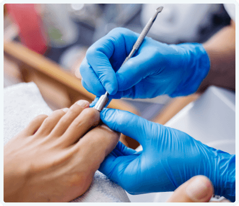

основні клінічні форми грибків нігтів
прояви грибка нігтів
Дистальна
Латеральна
Проксимальна
Тотальна
Зміна кольору
Потовщення
Кришення та руйнування
Фармакологічні властивості
Аморолфін, який є у складі лаку для нігтів Амодерм нео, проникає у нігтьову пластину та дифундує крізь неї і тому здатний ерадикувати гриби, що знаходяться у ложі нігтя і до яких важко дістатися.
Фунгіцидна дія лаку Амодерм нео полягає у зміні мембрани грибкової клітини, переважно завдяки впливу на біосинтез стеролів. Вміст ергостеролу зменшується і водночас відбувається накопичення атипових стеричних непласких стеролів.
Протигрибкова дія
Антибактеріальна
активність:
-
дерматофітів Trichophyton, Microsporum, Epidermophyton
-
дріжджів Candida, Cryptococcus, Malassezia
-
пліснявих грибів Hendersonula, Alternaria, Scopulariopsis, Scytalidium, Aspergillus
-
грибів родини Dematiaceaе Cladosporium, Fonsecaea, Wangiella
-
диморфних грибів Coccidioides, Histoplasma, Sporothrix
-
Бактерії: актиноміцети
Амодерм Нео водостійкий лак для ефективного та зручного лікування грибка нігтів
Амодерм нео. Спосіб застосування
Лак Амодерм Нео наносити на уражені нігті або 2 рази на тиждень.
Косметичний лак можна наносити не раніше ніж через 10 хвилин після нанесення лаку Амодерм Нео.
-
Ретельно відшліфувати поверхню нігтя за допомогою пилочки для нігтів
-
Очистити та знежирити поверхню нігтя серветкою з спиртом
-
Шпателем нанести лак на всю поверхню ураженого нігтя
-
Дати лаку висохнути протягом 3-5 хвилин
-
Шпателем нанести лак на всю поверхню ураженого нігтя
-
Дати лаку висохнути протягом 3-5 хвилин
- 
ТРИВАЛІСТЬ ЛІКУВАННЯ
від 9 до 12 місяців
- Клінічна імунологія. Алергологія. Інфектологія. Грибкові ураження нігтів. За матеріалами «Fungal Nail Infections. Quick Reference Guide» by BuiltbyDoctors 8 (87)' 2015 https://kiai.com.ua/ua/archive/2015/8%2887%29/pages-59-63/gribkovi-urazhennya-nigtiv-#Gribkovi_urazhennya_nigtiv_